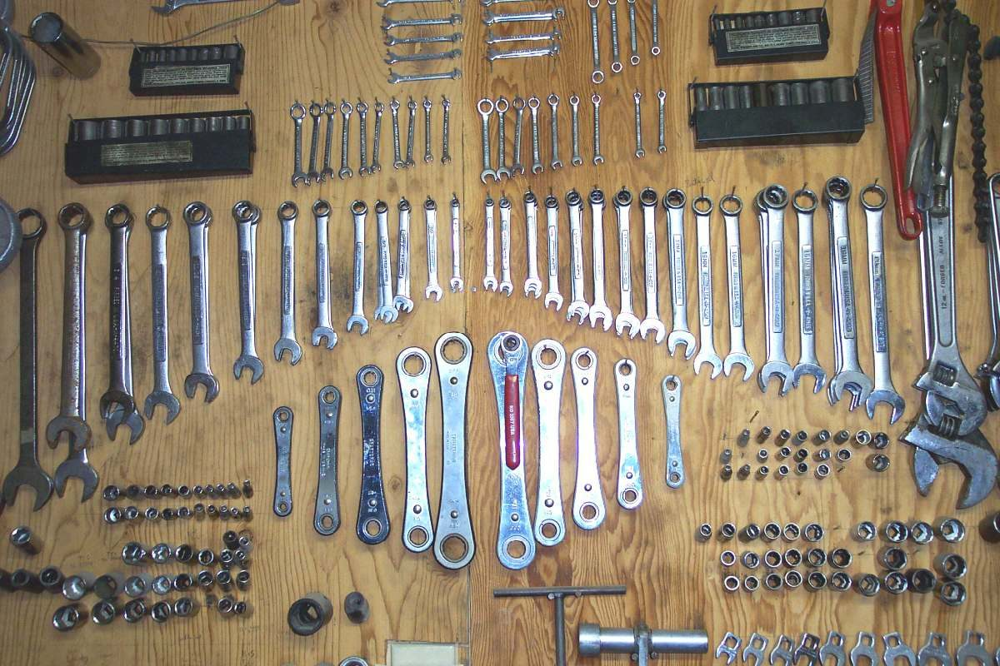
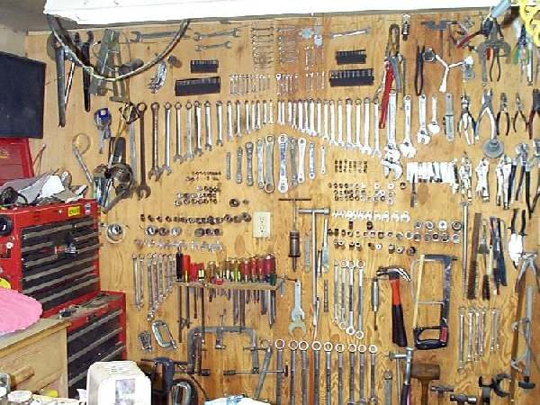
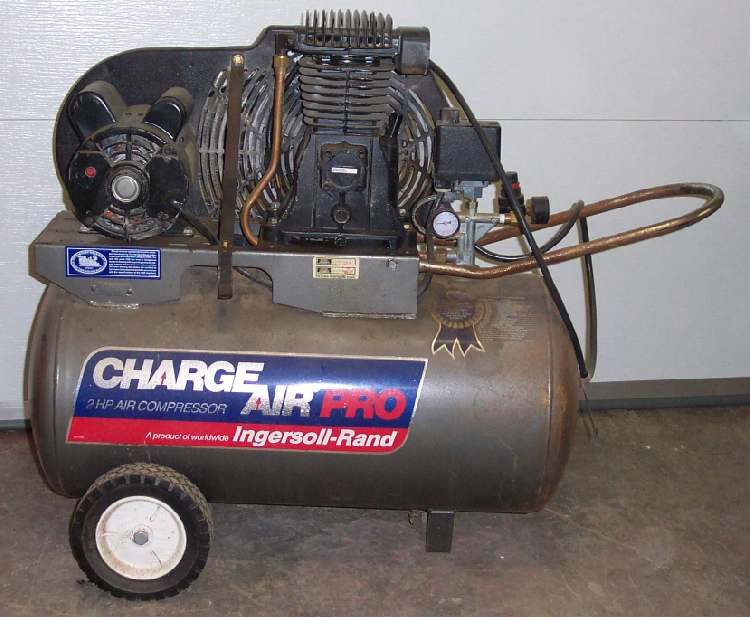

Most workshop injuries come from fire, fuel, battery acid, flying metal and slipped tools. A few simple items, kept close, turn a serious accident into a small one.
Safety
- Petrol vapour burns and can explode. Any spark, including static or a plug lead pulled off, can light it.
- Work outdoors or in a well-ventilated place. No smoking, no open flame.
- Battery acid burns skin and eyes.
You need
- A fire extinguisher of a type that suits fuel and electrical fires, in reach of where you work, with its pin and gauge checked.
- Eye protection, gloves and closed shoes.
- A first aid kit.
- A metal bin with a lid for oily rags and paper.
- A proper fuel container made for petrol: strong plastic or steel, with a tight cap.
- Clean water and baking soda for acid splashes.
- Parts solvent for cleaning parts.
Steps
- Place the extinguisher where you can reach it from the bike without crossing the fire. Know how it works before you need it.
- Fuel. Store petrol only in a container made for it. Never use bottles meant for drinks or milk. Keep the container away from heat and tightly closed. Do not leave an open pan of fuel.
- Cleaning. Clean parts with solvent made for the purpose, not with petrol.
- Rags. Put oily rags and paper in the metal bin and close the lid. This stops them heating up and catching fire by themselves.
- Sparks. Disconnect the battery earth lead before working near fuel or wiring. Test starter circuits and pull plug leads only away from fuel vapour. A backfire can set fire to an air box.
- Eyes. Wear glasses when grinding, drilling, using a wire brush or working under the bike.
- Acid. For battery acid on skin or clothing, flush at once with plenty of water. Baking soda in water neutralises spilled acid on surfaces and clothes. For acid in an eye, rinse with clean water for several minutes and get medical help.
- Cuts. Wash a cut at once with soap and clean water, cover it with a clean dressing, and keep it clean. Seek medical help if it gets red, swollen, hot or painful, or if it is deep.
- Burns. Cool a burn with clean running water for several minutes. Cover it loosely. Seek medical help for large blisters, burns on the face, hands or joints, or deep burns.
- Think ahead. Before you push hard on a tool, ask where it will go if it slips. Move your hand out of the way.
- Test rides. Wear a helmet, gloves and sturdy clothing, even for a short test. A loose sprocket, a failed brake or a locked gear can happen on any repaired bike.
Check your work
- You can see and reach the extinguisher from the work area.
- No open fuel, oily rags in a covered bin, and the floor is free of oil.
If it did not fix the problem
- Fuel spill or leak on the bike: Fuel is leaking or dripping.
- Battery that smells, swells or leaks: Battery is boiling, swollen or leaking.